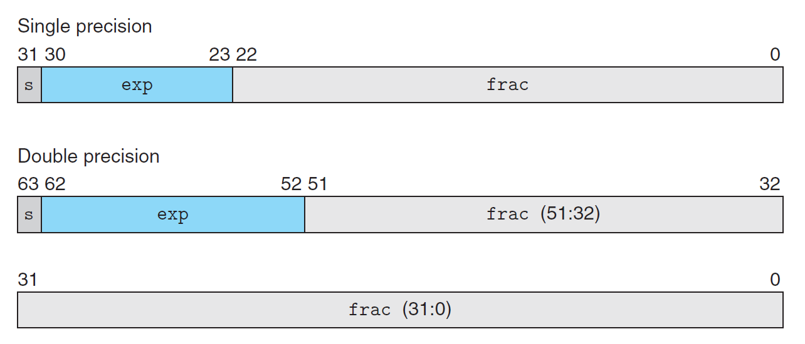
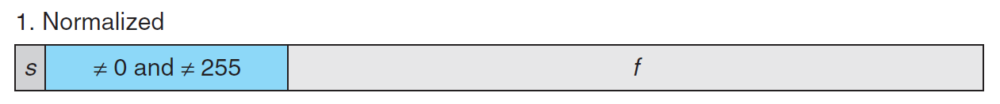
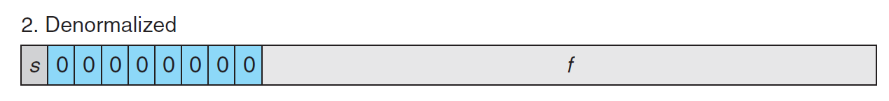
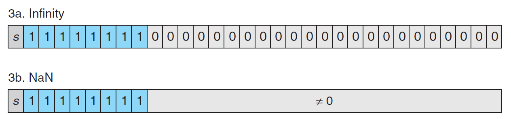

Chapter 2 Representing and Manipulating Information
2.1 Information Storage
C语言编译版本和命令行的对应关系：
| C version | GCC command-line option |
|---|---|
| GNU 89 | none,-std=gnu89 |
| ANSI,ISO C90 | -ansi,-std=c89 |
| ISO C99 | -std=c99 |
| ISO C11 | -std=c11 |
2.1.3 Addressing and Byte Ordering
机器存储数据有两种方式
- little endian: the least significant byte comes first
- big endian: the most significant byte comes first
2.1.8 Logical Operations in C
- logical operators do not evaluate their second argument if the result of the expression can be determined by evaluating the first argument.
2.1.9 Shift Operations in C
- C里面没有明确区分逻辑右移和算数右移，都是用
>>表示，编译器也会默认结合两者使用，但是java里面>>是算数右移，>>>是逻辑右移。
2.2 Integer Representations
2.2.1 Integral Data Types
- c和c++既支持有符号也支持无符号，而java只支持有符号
2.2.3 Two’s-Complement Encodings
- Definition of two’s-complement encodin(的意思是Binary to two’s complement):
For vector :
- 千古迷案：two’s complement名字的来源是因为一个非负整数x的w-bit的-x的表示可以用(一个2)来计算，而one’s complement名字的来源是因为一个非负整数x的w-bit的-x的表示可以用(很多1)来表示。
2.3 Integer Arithmetic
2.3.3 Two’s-Complement Negation
获得二进制数相反数的两种方法：
- 取反加一
- 把该数最右边第一个1左边的所有数取反(学到了有木有！！)
2.3.7 Dividing by Powers of 2
正数向下取整，负数向上取整
2.4 Floating Point
2.4.2 IEEE Floating-Point Representation

IEEE的浮点数编码主要有三种情况()：
-
Case 1：Normalized Values

首先exp部分既不能全0也不能全1，然后exp = 原本的exp - bias(bias为，单精度k是8位，双精度k是11位)。然后frac部分默认是0.xxxx，然后系统会自动给加上1，这样就多一位出来帮忙增加精度啦。 -
Case 2：Denormalized Values

如果exp部分全是0的话那么就是Denormalized Values，此时exp = 1 - bias，frac = 原本的frac，系统不会加1。引入denormalized values的目的有两个：-
- 表示+0.0和-0.0，+0.0就是所有bits全是0，而-0.0就是除了s符号位全是0.
-
- 表示非常接近0的数字
-
-
Case 3：Special Values

如果exp部分全部是1的话那么就是Special Values。此时，如果frac全为0，s=1是负无穷，s=0是正无穷。如果frac为非0，则表示NaN。
2.4.4 Rounding
IEEE有四种rounding的方法，默认是找最接近(round-to-even/round-to-nearest)的数，其余三种是round-toward-zero/round-down/round-up mode。